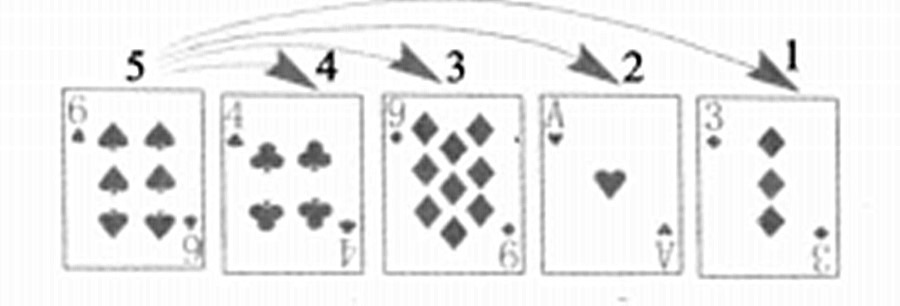
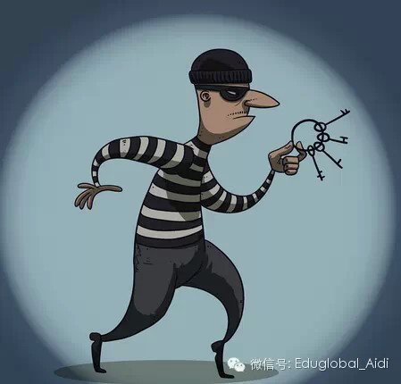
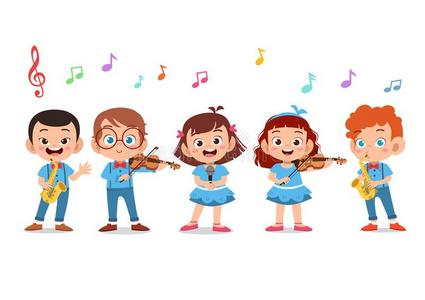

Popular and interesting C language questions
I.Guessing
This problem involves the arrangement and drawing rules of a deck of cards. Specifically, there are 13 spades in a deck, stacked face down. The first time I played, I flipped over the top card and found Spade A. I pulled Spade A out and placed it at the bottom of the deck to become the last card. The second card is played, counting two cards from top to bottom in order. When the second card is flipped over, it happens to be Spade 2. Draw Spade 2 and place it at the bottom of the stack to become the last card. Repeat this process until all the spades are uncovered. The problem lies in how to simulate this process through programming and predict what cards will be flipped out each time.
II.The candy distribution problem
This is a classic mathematical problem that can be solved using C language. Suppose there is a basket containing a certain amount of candy, which needs to be evenly distributed among the students in the class. The question is, if there are 17 candies in the basket and 5 students in the class, how many candies can each student get? What should we do with the remaining candies? This problem can be solved through division and remainder operations.
III.Who is the thief
This is a logical reasoning problem. Public security personnel interrogated four suspected thieves, only one of whom was a real thief, while the other three were either honest or always lying. Each person's answer is as follows: A says, "B didn't steal, it was Ding who stole it." B says, "I didn't steal, it was C who stole it." C says, "A didn't steal, it was B who stole it." Ding says, "I didn't steal." Based on the answers of these four people, how can we determine who the real thief is? This problem can be solved through logical judgment and conditional statements.
IV.Scoring for Singer Contest
In a Singer Grand Prix, 10 judges rate the contestants on a scale of 1 to 100 points. The final score of the contestant is the average of the remaining 8 scores after removing the highest and lowest scores. The question is how to calculate the final score of the player. This problem can be solved through array sorting and element selection.